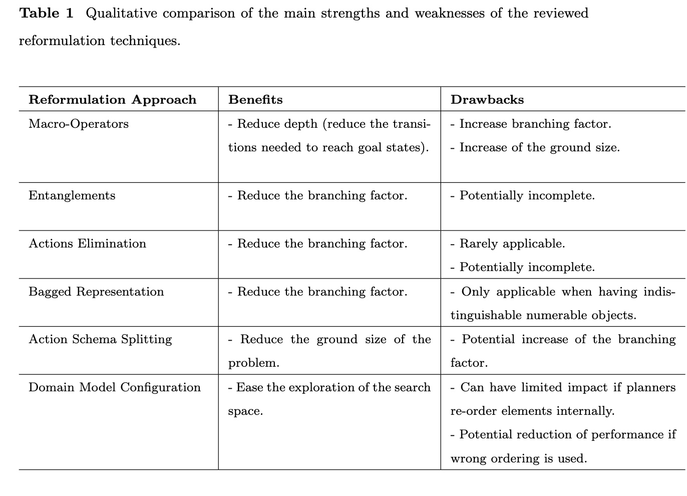
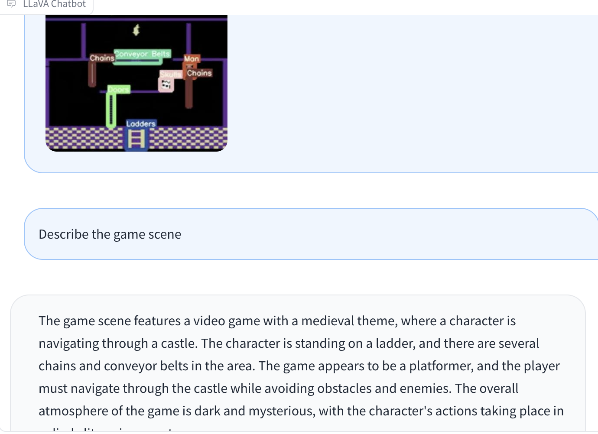
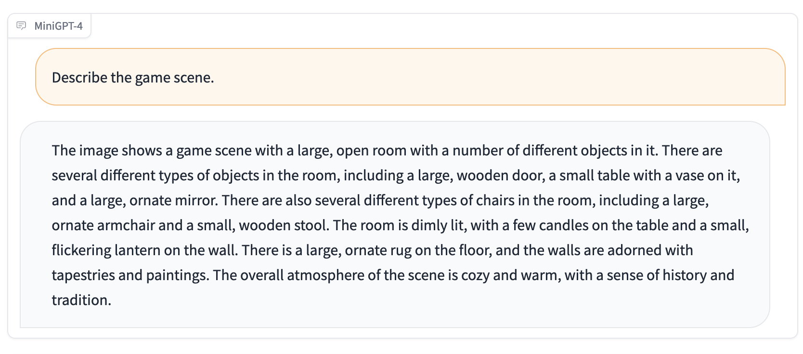
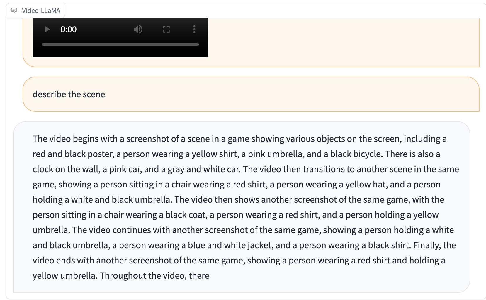

Previous Work Review#
- we have the briefing
- now we continue the experiments and continue writing
You need password to access to the content, go to Slack *#phdsukai to find more.
Part of this article is encrypted with password:
[TOC]
TODO List#
- Investigate the same thing in other domains - 15 puzzles, gripper, freecell, elevator
- a) subgoal-ordering, b) task decomposition and add additional subgoals c) macro actions d) inferring goal distance as heuristics.
- one more – entanglements – aiming at removing useless actins from a ground planning task.
- train modular policy for MR
LLM help PDDL#
definition of reformulation in domain-independent planning#
-
macro actions
- macros encapsulate sequences of (primitive) planning operators. It provides short-cuts in the state space and, consequently, planning engines can generate plans in a smaller number of steps.
- Operator elimination may be occurred after defining macro actions
-
entanglements
- aiming at removing useless actins from a ground planning task.
- require domain specific knowledge, for instance, gripper domain, a optimal solution does not move objects that were not in their original positions. Thus, by modifying the predicate and precondition of actions
-
bagged representation
- in cases where only the number of objects is relevant, and it is not important to have the ability to distinguish between objects, they can be represented as “bags” of identical objects.
-
Action schema splitting
- the number of ground actions grows exponentially with the number of parameters and the number of objects of problem to solve.
- by splitting large operators into smaller ones (with regard to the number of parameters). The main aim is to break the exponential growth by dividing parameters between different operators.
- however, action schema splitting can be understood also as the “opposite” of macro-operators.
-
domain model configuration
- it is well known that the way in which elements of planning models are ordered can have an impact on the performance of domain-independent planning engines
- ref: A. E. Howe and E. Dahlman. A critical assessment of benchmark comparison in planning. Journal of Artificial Intelligence Research, 17:1–33, 2002.
- Vallati, M., & Serina, I. (2018, June). A general approach for configuring PDDL problem models. In Proceedings of the International Conference on Automated Planning and Scheduling (Vol. 28, pp. 431-435).
- the ordering of operators follow the expected typical ordering of corresponding actions in solution plans that has been demonstrated to be useful for a range of planning engines.

- it is well known that the way in which elements of planning models are ordered can have an impact on the performance of domain-independent planning engines
15 Puzzles#
domain: https://github.com/icaps15-CAP/sigaps-domains/blob/master/15puzzle/domain.pddl
- issue: it looks like sorting the problem does not improve the performance of SIW planner
- the common strategy is a recursive method. GPT4 can generate a python code for that reorder the sub-goals to align with the strategy
- recursive method is a special type of task decomposition. However, it seems that GPT4 has no idea how to encode the knowledge of task decomposition into PDDL domain file
- there are no obvious additional sub-goals to add
- GPT4 is able to come up with macro actions and inferring goal distance as heuristics.
Chat History: https://chat.openai.com/share/f18849bc-553c-437c-a0cf-b4fc8e1f6e0e
Gripper#
domain: https://github.com/AI-Planning/classical-domains/blob/main/classical/gripper/domain.pddl
- GPT4 is able to come up with reasonable strategies and then it can generate a python function that sort the sub-goal list based on the strategies
- It knows how to decompose the task, while it cannot find obvious additional subgoals.
- GPT4 can come up with macro-actions
- GPT4 can also come up with goal distance heuristics
Chat History: https://chat.openai.com/share/f3abe9d0-42b4-43b4-92bc-4706184e5565
Elevator#
- GPT4 is able to provide quite reasonable answers.
- the strategy provided by GPT4 is that assign passengers with different elevators.
- we can guide GPT4 to write Python program to re-order the goal list and assign passengers to different elevators.
- The task decomposition and the macro-actions are associated with the passenger assignment strategy.
- the goal distance heuristics are reasonable.
Chat History: https://chat.openai.com/share/8e7866cd-cc90-4047-86b1-e2cff7458a8b
Freecell#
domain: https://github.com/AI-Planning/classical-domains/blob/main/classical/freecell/domain.pddl
Chat History: https://chat.openai.com/share/efb48129-3fd9-42e7-aa1a-e847067fbff4
LLM help RL#
- we train the submodular model
- observations
- need to train longer (because we have more networks)
- usage ratio for each stage (stage means the current state in the plan path) is not stable
- this is because we do not pretrain the submodule
- we may need to think about how to train the submodule to produce STOP signal at the correct time.
- maybe we still want language reward for submodules, but now we have short chunks and there is little chance of having partially matched rewards
- video captioner (e.g., Video-LLaMa) is large in size and require huge computational power (e.g., 8*A100). Thus we may want to use LLaVA (try it) or MiniGPT-4



- LLaVA is able to recognise annotations in the image, thus we can prepend object detector in the pipeline.
Appendix#
Blockworld GPT chat history#
https://chat.openai.com/share/2bc2c951-919c-47f2-8bbc-8678004952a2
|
|
|
|
|
|
Online repository for PDDL domain files#
https://github.com/AI-Planning/classical-domains/tree/main/classical
|
|
Paper Reading Notes#
-
Alarnaouti, D., Baryannis, G., & Vallati, M. (2023). Reformulation Techniques for Automated Planning: A Systematic Review. arXiv preprint arXiv:2301.10079.
-
Reward Machines for High Level Task Specification and Decomposition in Reinforcement Learning
- Author: Rodrigo Toro Icarte et. al.
- Publish Year: PMLR 2018
- Review Date: Thu, Aug 17, 2023
-
Reward Machines: Exploiting Reward Function Structure in Reinforcement Learning 2022
- Author: Rodrigo Toro Icarte et. al.
- Publish Year: 2022 AI Access Foundation
- Review Date: Thu, Aug 17, 2023
-
BLIP2 - Boostrapping Language Image Pretraining 2023
- Author: Junnan Li et. al.
- Publish Year: 15 Jun 2023
- Review Date: Mon, Aug 28, 2023
-
- Author: Peng Gao et. al.
- Publish Year: 28 Apr 2023
- Review Date: Mon, Aug 28, 2023